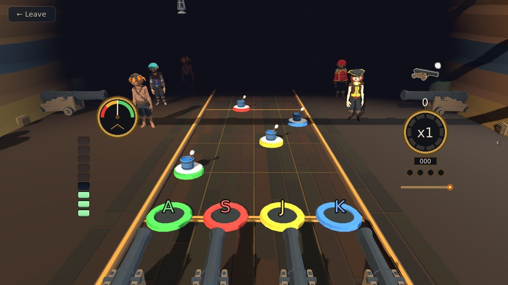
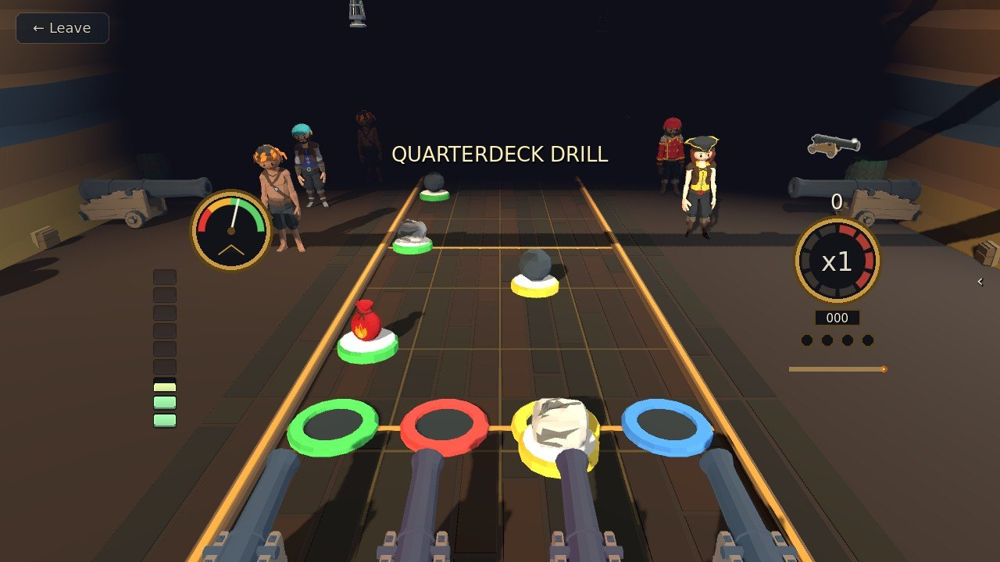
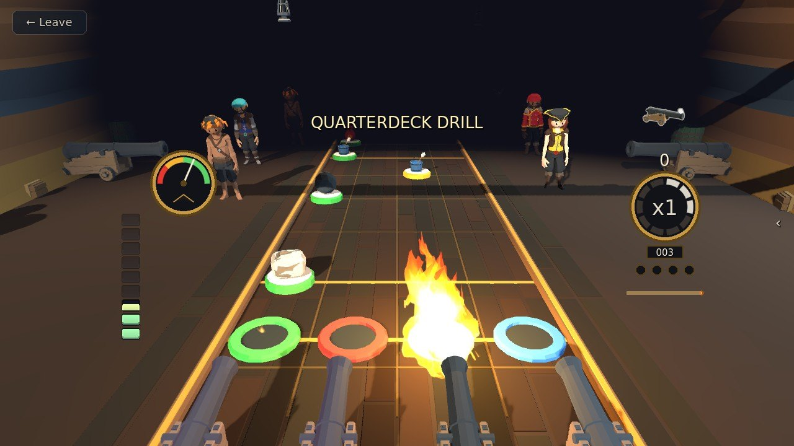
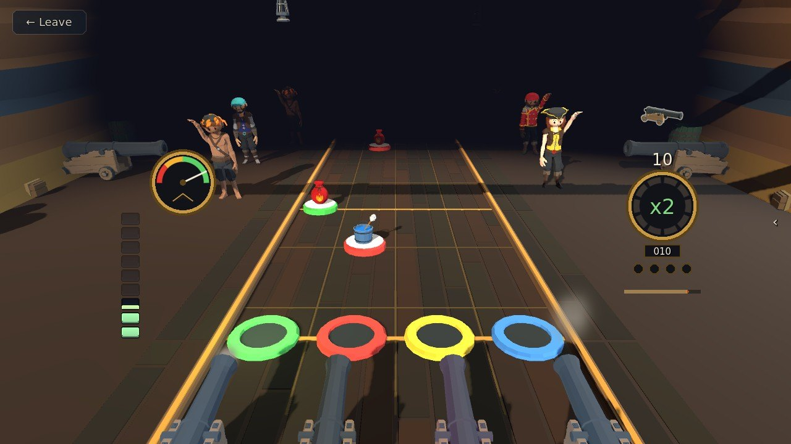
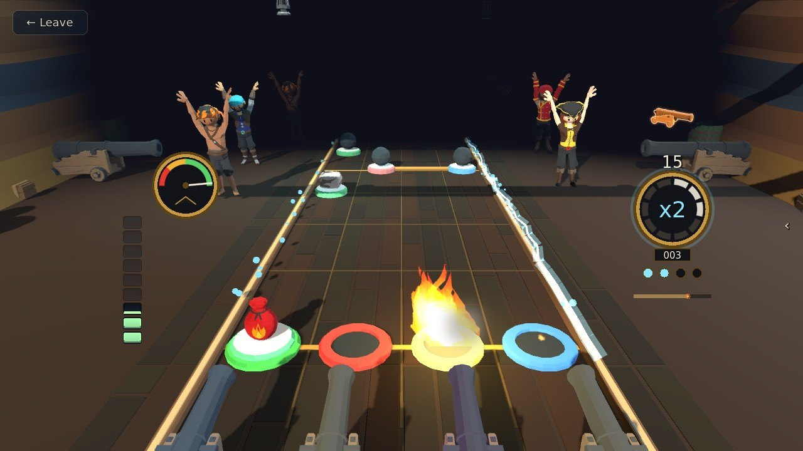
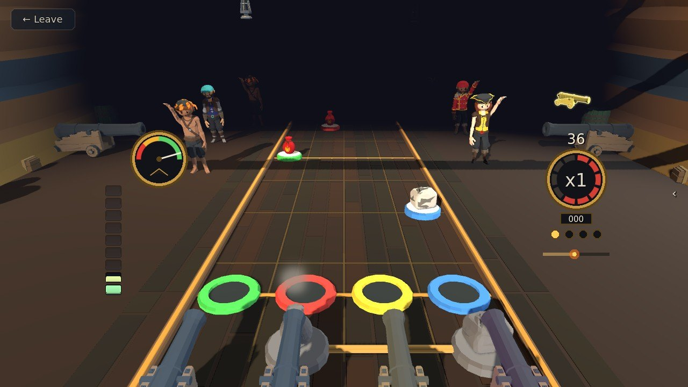

Gunnery
Hit each charge on the beat as it reaches its gun: a bucket, powder, wad and shot, and the gun fires.
Step by step
-

1Your guns' rings2A piece coming1Your guns' rings2A piece coming Step 1Hit on the beat
The deck plays a song. Pieces come down the lanes toward your guns' rings: hit each one with its gun's key as it crosses the ring, on the beat. The letter on each ring is its key (A S J K with four guns; the D-pad and shoulders on a pad). Hold the key through a glowing trail until it ends.
-

1Powder2Shot3Wad1Powder2Shot3Wad Step 2Load each gun in order
Every piece that comes down a lane is the one its gun needs next: a bucket to swab it out, then powder, then a wad, then shot.
-

1Fired!1Fired! Step 3The fourth piece fires
The fourth piece goes in and the gun fires. Guns that fire together are a broadside.
-

1Multiplier1Multiplier Step 4Ten in a row
Every ten hits in a row raise your multiplier, up to x4, and the ring round the dial fills as you go. A miss, or a press with nothing there, breaks the run.
-

1Stardust bulbs2Doubled1Stardust bulbs2Doubled Step 5Unleash the Stardust
From level 3, hit every gilded piece of a run to gather Stardust into the four bulbs under the dial. At half full, press Shift to unleash it and double your multiplier.
-

1Gun Captain1Gun Captain Step 6Mind the Gun Captain
The dial on the left is the Gun Captain's patience: every hit lifts the needle, every piece you let go by drops it. Let it empty and he relieves you. The shift ends, but what you banked stays banked.
The rules, as the game tells them
The deck plays a song. Hit each piece as it crosses its gun's ring, on the beat. Hold the key through a glowing trail until it ends.
Your ship has 4 guns, and every piece that comes down a lane is the one its gun needs next - a bucket to swab it out, then powder, wad, shot. The fourth goes in and the gun fires; guns that fire together are a broadside.
Every ten hits in a row raise your multiplier, up to x4. A miss, or a press with nothing there, breaks the run - and miss too many and the Gun Captain sends you off the deck.
Hit every gilded piece of a run to gather Stardust (from level 3); at half a meter, unleash it to double your multiplier.
Guns: A S D and J K L (the D-pad and shoulders on a pad). Unleash Stardust: Shift.
Word for word from the game: in play the same text sits behind the ? on the board, so this page cannot drift from it.